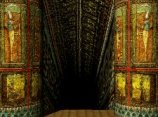
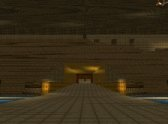
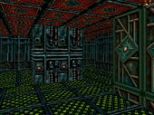
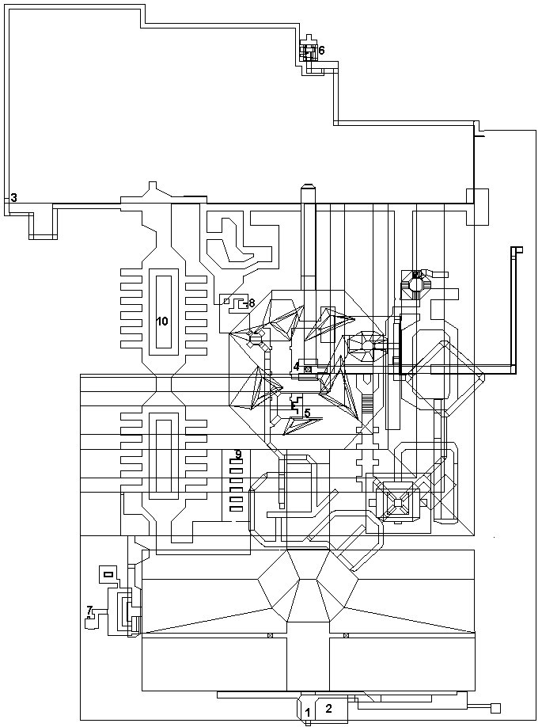

| 1. | Entrance |
| 2. | Backdoor Key |
| 3. | Backdoor |
| 4. | Center of pyramid. On the main floor, there are the pools that you walk onto to be prompted to enter a name. On the floor above, there is an elevator that takes you to a room at the top of the pyramid. |
| 5. | Water Temple Key First Mates Code |
| 6. | Water Temple In the bottom you will find another crystal skull, and the Bibliothecca Chest key. Navigator's Scroll |
| 7. | The Flame Door Key, and a crystal skull The Captain's Scroll |
| 8. | Control Cube |
| 9. | Biblotheca (Libarary) Chest in the librarym there are books in the book cases. The Doctors's Code is in the chest The Engeneer's Code is in the wall on the right as you face the chest. The Communications Officer is in the wall on the left as you face the chest. |
| 10. | You can find some Magic Lamps here. You can trade them in Dragonsand city |
This place could be a city in itself. There is the main pyramid, and the central pyramid inside of it. There are plenty of Efferts in here, and many guards of VARN. They all have less than 1,000 HP, but they have some magical immunities. Implosion seemd to work on all of them though.
The crystal skull will protect you when you get into the main room in the central pyramid (#4 in the main level) from the radiation that will hit you quite often. Once you are radiated you can just go get in some of the water to stop the damage. Until you enter again. The skull seems to only be 100% protection for those holding it.
I kind of thought it was cool the passwords you have to enter are from the original Star Trek only backwards. Plan on spending some time on this one.
Leave us a message at: mgrounds@hotmail.com